What is BlueCat?
BlueCat is a business to business company that enables a new approach to tackling complexity at the network edge and DNS. These are the foundations of increasingly complex enterprise networks, with BlueCat being the leader in Adaptive DNS - scaling to meet escalating demands by users, applications, and services. Having a broad overview of all the products will give some basic familiarity towards what types of projects the UX team does at BlueCat.
BlueCat has three products: Integrity, Edge, and Gateway.
Integrity: Also referred to as BAM (BlueCat Address Manager), it serves as the user interface for BDDS (BlueCat DNS/DHCP Server). BAM is used to bring up/down servers and manage their configuration.
Edge: A cloud-based DNS threat and logging platform, where it records incoming queries and determines if they are a risk to the network. Gives cybersecurity and network teams visibility and control over internal and external DNS traffic.
Gateway: A Python-based web utility that leverages the Address Manager API to allow you to create custom workflows of common Address Manager tasks.
user research + ux + interaction design
001. redesigning the UI of a flagship product, BlueCat Gateway
overview
Modernizing the UI according to the company design system to ensure efficient user taskflow and satisfaction in a contemporary layout (progress is currently ongoing).
customer problem
The current UI of BlueCat Gateway is outdated compared to newer products such as BlueCat Edge. With this UI overhaul, the idea of a new dashboard concept is put to question as well.
goal
Establishing a modernized design that will be the foundation of the product's UI for years to come. In addition, improve the user journey through the product.
result
Currently ongoing; collecting feedback from the director, product managers, and major stakeholders of BlueCat Gateway to ensure the direction of the redesign is well-received.
The Initiatives
What is the context?
High Quality Solution
Good quality has a huge downstream impact around customer satisfaction, optimization of care resources, and ability to focus on strategic initiatives.
Gateway Re-architecture Initiative
Re-architect BlueCat Gateway to make it 100% stateless. This is beneficial for better deployment, orchestration, and scalability.
My Role
What did I do?
It's a compelling experience to work on a project as the sole designer where I will make an impact at BlueCat for years to come. I need to design without interfering with how the client's use Gateway. Using Axure RP9 and Sketch, I designed (and am currently designing) a high-fidelity mockup that imitates a live version, with extensive depth into its interactions and usage to improve and streamline user satisfaction.
Persona: Network Admin

Understanding the requirements
What is needed from this?
1. Maintain existing functionality, specifically show/hide BAM IP/domain, online help, and landing page
2. Maintain functionality of custom image in banner
3. Use more screen real estate:
- Current workflows use the default template (which is narrow) and the request is to make the template larger so that workflows use more page real estate
- How will a default change to the template affect existing customers?
Designing the experience
The initial thought process for this project is to improve the users’ experience with the product. One of the challenges was to refresh the Gateway UI while keeping inline with Edge’s design system and layout to ensure uniformity between products. To reskin a flagship product, I have to ensure that the design satisfies all stakeholders without causing any risk to the project timeline and not to deviate from the purpose of Gateway.
The first step was to understand the clients' journey through Gateway. After conducting user research, it became clear that almost all customers and internal BlueCat employees disliked the current landing page and would go straight to the side menu. With that feedback, I decided to do a complete overhaul to give the landing page purpose.
Current BlueCat Gateway
PART 1 - Gateway Dashboard
To fit the paradigm of having a dashboard on all products, I thoroughly researched different landing page and dashboard concepts that could display workflows effectively while avoiding adding unnecessary information to the user. Compared to BlueCat Edge and Integrity, Gateway is not statistics driven, so I approached the dashboard with a general direction on how to improve usage of the front page.
Gateway Dashboard Concepts

When talking to the technical product manager of Gateway for feedback on my ideas, he leaned towards concept #3 that I drew out (see top-right concept on previous image). This concept drew inspiration from the Aha! dashboard (see below), where my idea has the workflows catagorized based on their usage. This required recording metrics, and the developers currently have a program set up to record the data locally for each client.
Aha Dashboard

(src: https://blog.aha.io/?s=dashboard )
Curret Gateway Dashboard

Dashboard Design as of February 10, 2020

See the up-to-date mockups here: https://6glx6p.axshare.com
The mockup for the Gateway dashboard (seen above) that I constructed catagorizes workflows based on the user's usage of those workflows and the names of the the workflows followed by who has access to it. The way I designed this is to allow for the user to have faster access to their desired workflows, prioritizing the efficiency of the user's taskflow when on Gateway.
___
PART 2 - Gateway UI
Updates on the project
After having a meeting with the technical product manager about an update, it was noted by internal customer stakeholders that BlueCat Integrity is the main product of BlueCat and Gateway is a product that supports Integrity. Due to this, the stakeholders have a strong preference that the UI color scheme of Gateway resemble Integrity (bright colors). With the mockups resembling Edge's design system, the Integrity UI colour scheme for Gateway needs to be a separate design entirely.
Understanding the requirements (pt. 2)
What is needed from this?
1. Gateway UI needs to resemble BlueCat Edge
2. As a second level requirement for the Gateway UI refresh, investigate the option of providing a Light Mode that resembles the UI of BAM 9.2.0 (for reference, see below)
Uncertainties
1. Do we provide the light mode as a plug-in via BlueCat Labs (GitHub) or
2. Do we ship the HTML/CSS/JS files in the Gateway image to provide the functionality in the UI to switch between light and dark modes?
- Must keep in mind that Engineering wants to keep the size of the Gateway base file as small as possible
BAM 9.2.0 UI

Edge and Integrity Color Palettes and Typography
The UI I created follows the design system for Edge, and the ask for a BAM UI look meant that I needed to integrate the BAM design system in a different file. My manager recently worked on a facelift for BAM (BAM 9.2.0), so I asked for the design system he made for the new UI look.
BlueCat Edge Design System


BAM 9.2.0 Design System


Using the BAM design system, I duplicated the Gateway design that I made for the Edge scheme and reskinned the UI. In addition to that, each page after the dashboard page has the navigation menu open to keep a consistent paradigm with the Edge interface, where it has the same concept to make it easier for the user to flow through the product.
Shown below are some of the currently designed pages for the Gateway UI as of February 28th (note: most pages have a recoloured layout, spacing fixes, and typography alignments - the pages have yet to be completely redesigned at this time).
Please view the video at the beginning that walks through the current Gateway UI.
Dark Mode Design


Light Mode Design


See the up-to-date mockups here: https://6glx6p.axshare.com
Checkpoint
Updates on the project
Recently, I presented the current mockups that have both the Edge styling and the BAM reskin to the director of BlueCat Gateway and two of the primary stakeholders to gain feedback on the direction of the UI design concept. It was well-received, and I took note of valuable insights towards where to go next.
Feedback on the project
1. For the dashboard design, only have the frequent usage column
- From the perspective of the user, the frequent usage column is the only section necessary for their using
- From the standpoint of an admin, having information to the usage of each workflow is interesting to have
2. Would the usage columns be for overall usage between all the users in that company using Gateway? Or would it be an individual's usage?
- If for the user, it could be recently used instead of frequent usage
3. Everyone loves the search function, where it allows the user to quickly search the name of their desired workflow
4. They wondered about the functionality of the breadcrumbs:
- Clicking home or the back arrow button sends the user to the dashboard
- Clicking the parent directory opens the left navigation menu (if it was previously closed) to the section with that directory
5. Once the mockups are prepared and knowledge the feedback given, they will be sent out to the VIP channel (consisting of company/enterprise managers, network admins, etc.) on the BlueCat Slack for further user testing and feedback.
___
Next steps
Gather more feedback from managers and internal customers, conceptualizing a new dashboard idea using the frequent usage column, and gradually start implementing new page layouts.
The project is still in progress, so this section will continue to be updated with more information.
Wanna see the up-to-date mockups? Check this link here !
interaction design
002. comparing queries per second per service point
overview
Having additional information related to the traffic loads on each service point will enable users to discern the loads on their deployed service points visually.
customer problem
Customers cannot view the differences of weight distributions of ongoing traffic on service points. This creates no clarity towards whether certain service points are taking a bigger toll over others.
goal
Add capabilities for comparison evaluations within Edge, supporting multiple analytics between two or more service points. Ideally, this would be displayed on the Edge Dashboard as statistics.
result
The feature recently received feedback from developers. Moving forward, the concept is to be pitched to the technical product managers for further implementation.
The Landscape
What is the situation?
During a meeting with the product managers of Edge, having visibility on comparing the load of QPS per SP would be beneficial for a customer to view. Currently, there are no ways to showcase the ongoing traffic.
My Role
What did I do?
By focusing my efforts on designing the UI for the comparison, I was the sole designer towards addressing the progression each user would go through for accessing the comparison visibility. Being responsible for all the design needs of this feature, I put my attention onto designing the feature MVP.
User Flow of the Comparison Feature
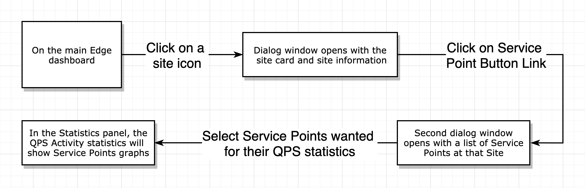Finding the product-market users
Who would use this?
To define the process of providing visibility on comparing QPS per Service Point, I had to visualize an efficient use case of this feature for customers.
As an infrastructure engineer and network engineer, I want to be able to have visiblity on the traffic loads between my deployed service points in my network. Having this data would expose which areas of my network are taking a bigger toll over others. This would then be used to fine tune traffic weight distributions on anycast.
Persona #1: Infrastructure Engineer
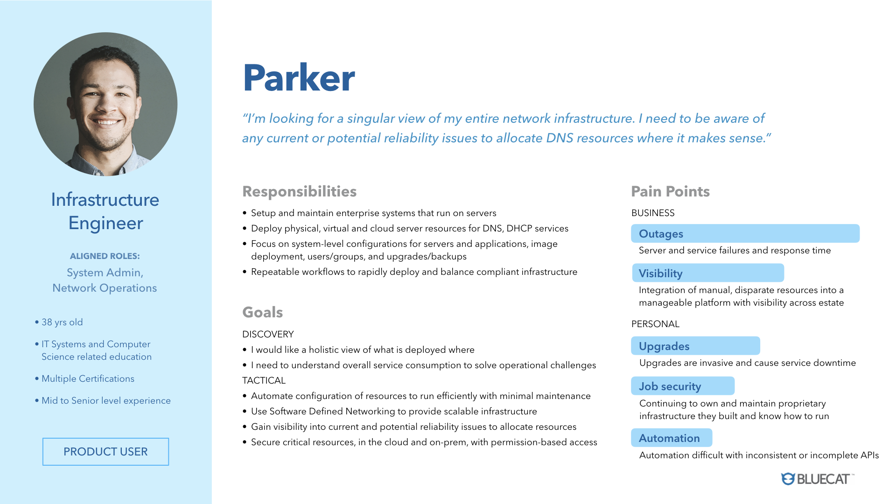Persona #2: Network Engineer
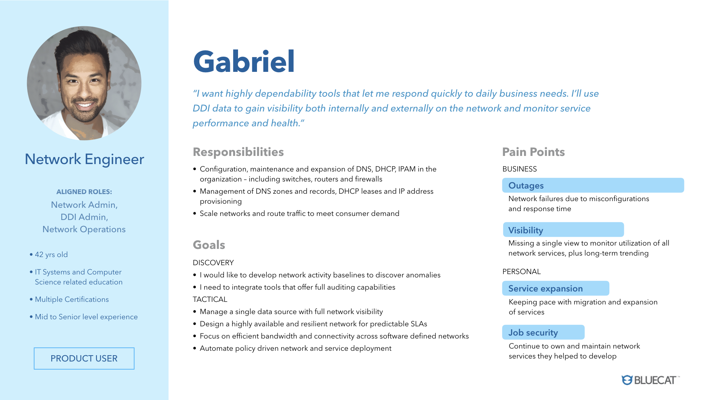Understanding the perspectives
These two personas help to discern and focus upon three areas:
1. Understanding what's important to the customers and their network security
2. Prioritizing the usage of visuals to enhance the feature without taking away from the data
3. Ensuring that the momentum of the design is efficient and fast to understand
Building the feature
Focusing on the core aspects
To offer the QPS activity data on the Edge dashboard, I had to provide a dynamic task flow without adding unnecessary elements.
The statistics panel of the dashboard currently provides information on the QPS activity of all the sites in the customers network. I wanted to capitalize on that by also adding an option to make it showcase individual statistics of whichever service point the user wanted.
Axure
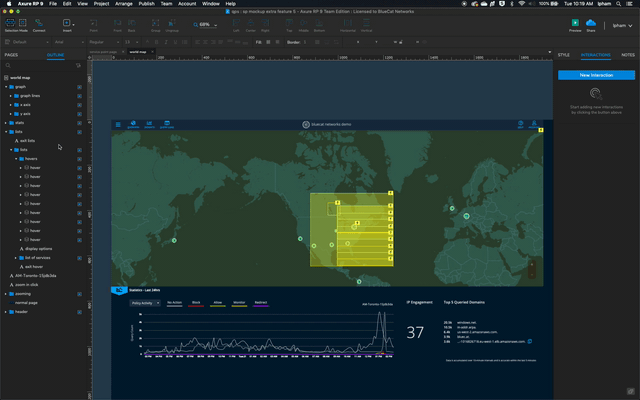Web
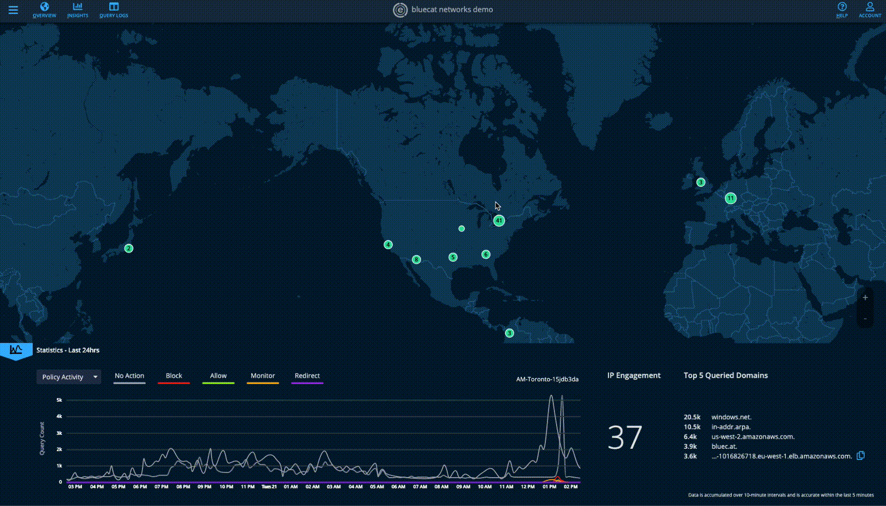Progress Point #1
Going into my process of designing this feature, I started out with aligning the concept to what each persona wants out of this. From there, the design would continue to be fleshed out and fixed as I went.
The first idea was to have a dropdown dialog window that lists all the service points at that site upon clicking. This would allow for the customers to quickly access all the service points at that location.
Axure
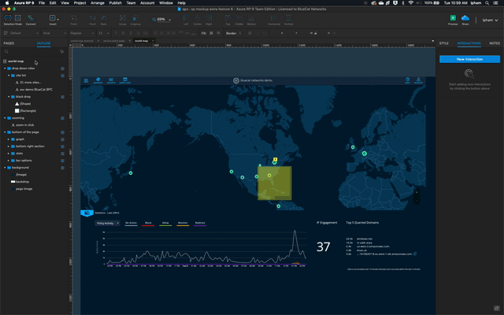Web
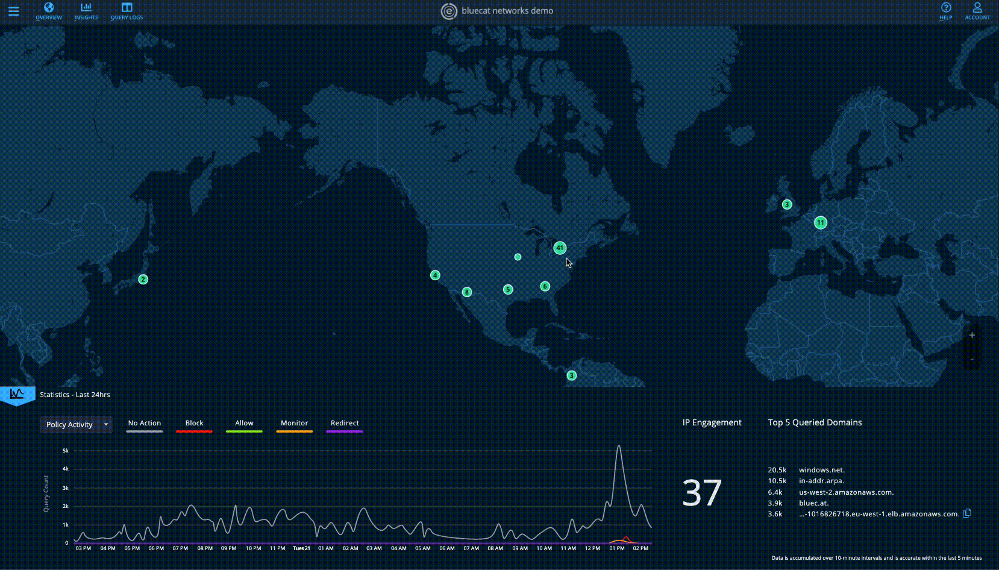Progress Point #2
My progress onwards entailed hovering on the site points to show a list of all the service points using a black dialog box. The box was shown in one variation of my manager's design for a different concept. By using that, I designed it similarly to keep a consistent paradigm with the past designs.
Axure

Web
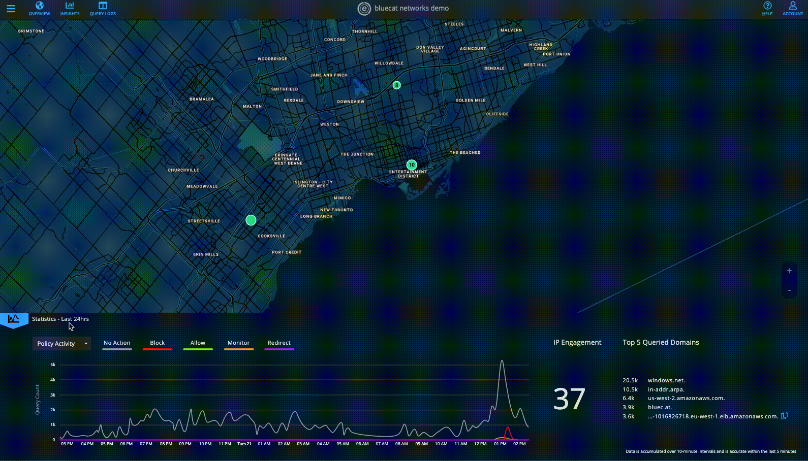Progress Point #3
The issue I overlooked was that each point on the map can represent more than one site, so listing all the service points for all the sites at the point proved to be cluttered and unorganized. Replacing that with a site card allowed for more space to add additional data showcased to the user upon clicking.
Having the essential data at the forefront was the focus so that the user flow through the feature would eliminate excess details and information that was unnecessary to the concept and the rest of the dashboard.
Final Product - version 1
Issues with the concept
What kind of feedback did I receive?
The integration between the Google Maps API and BlueCat provided many restrictions with the way it was coded. With my concept, having multiple dialog windows appear and remain on the map was not possible.
The feedback definitely called for a revision of how the feature should flow from a more technical standpoint.
Revisiting the idea
How can I make the flow more efficient and usable?
Using the feedback I received from the product managers and developers, I began redesigning the user flow without losing sight of the initial problem. The main point I needed to address was how to display the information outside of the coded restrictions from the API and BlueCat's coded implementation.
How can I compare the weight distributions of chosen service points without needing to presenting multiple dialog windows on the map?
Revisions to the concept
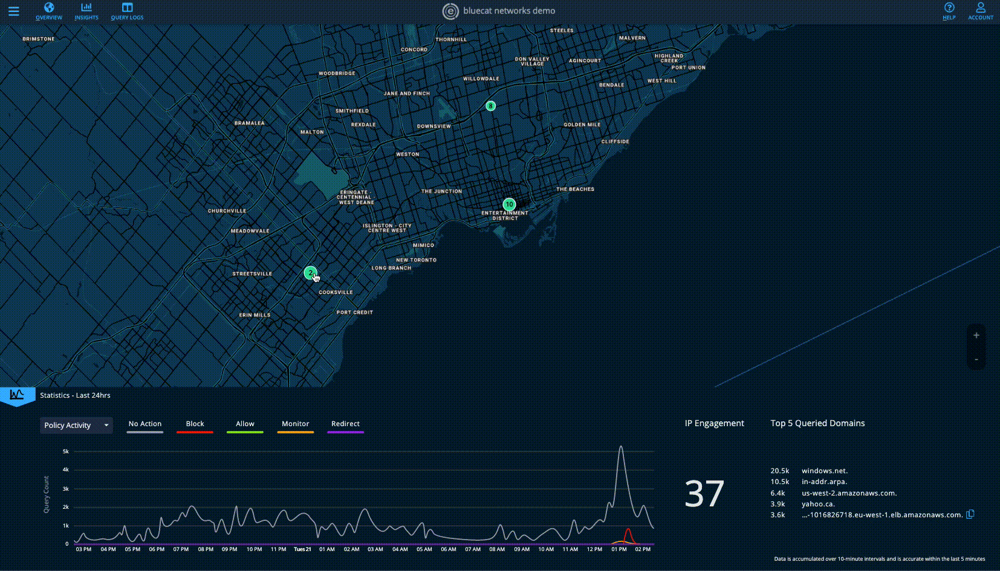Progress Point #4
Approaching this feature again, BlueCat launched the addition of site cards. These cards provided information on the site, such as location, service points, and two icon buttons that lead to the Insights page and the Query Logs page.
By having an official appearance to the site card, I incorporated the design into my concept to have consistency with the pilot. My own additions to the site card was:
1. A section on the average QPS in a recent timeframe. Implementing this data exposes the average amount of traffic at this site, inclusive of all service points.
2. A "See Service Point QPS Statistics" button that will lead into a popup dialog window, filtered to the service points at that site.
Final Product - version 2
Issues with the concept (pt. 2)
What kind of feedback did I receive?
A question was raised about where the feature would reside; would it be in the Insights page or would it revolve around the site cards? Further investigation is needed to see whether this information would be valuable to customers and if they would use this feature.
Adding onto that feedback, the statistics panel would hold the graphs for the service point QPS. In my design, I placed a maximum of four additional service point QPS graphs alongside the total QPS activity. The focus of the concept was to allow the customers to view the weight distributions between selected service points. Having a max restriction deviates from how the customer may want to view all their service points in the site, where the site can have more than 4 and they wouldn't be able to view all the distributions.
Wrapping things up
Main takeaways and production
For the individual QPS activity data to be collected, my next step for this feature would be to give a business case to the technical product managers of Edge about how valuable this is to customers. From there, they will provide capacity for teams to integrate the API that would be needed.
Overall, my time spent on this feature provided many learning points. This project is still in progress, but currently, it helped me to understand the interactions between design and developers. With UX and its interactions with UI, this taught me about viewing a solution based on a management and technical level.
user experience + interaction design
003. visualizing malicious traffic on the Edge Map
overview
Implementing visiblity towards search efficiency and malicious traffic on a network in a visual and dynamic flow.
customer problem
If suspicious query traffic occured on one or more of a network's sites, there is no immediate visual to indicate an issue for the Security team to look into.
goal
By aggregating the problematic queries to be site specific, security analysts can track the behaviour of the policy actions at that site in case the site is under attack.
result
Currently receiving feedback on the concept, and will begin production once approved.
Part 1
The source IP in the Edge Customer Intelligence panel can tell the security team if they have 1+ machines compromised. By aggregating it to be Site specific, it can immediately signal a Security team if they have a site under attack.
Defining the problem
The purpose of this feature
With large enterprise customers, this is to give them a heads up of a large number of problematic queries at the Site level. This concept will help visualize and track behaviour of the policy actions at that site.
Version #1
Understanding the customer's perspective
As organizations have increasingly complex networks and have to watch multiple systems to monitor traffic on their network to identify malicious activity or issues in their infrastructure, network and security professionals need a way to get visually alerted to certain patterns or issues in their traffic.
As a security analyst, they want to be able to have an immediate visual on the Edge Dashboard to signal an issue on the sites in their network.
The first iteration
In my mockup to showcase malicious traffic, I added red to sites with malicious traffic to symbolize the problematic queries occuring at that location. By also including a separate category for threat activity in the site cards, I ensured that there are API's available in BlueCat's code to collect that data. The dots beside each site name shows which one has the issues, making it easier for the user to view.
Version #2
The addition of the See Statistics and See More buttons provide supplementary information regarding the site's queries. See Statistics collects the data of policy actions at that site and visualizes it in a graph form in the statistics panel below. See more leads to the Threat Activity section of the Query Logs page with that site filtered already (see below).
Currently on the Edge statistics graphs, the user is able to click and drag a specific timeframe that they wish to view and that will lead them to the DNS Activity section of the Query Logs page. By activating the policy actions statistics of a particular site, I mimicked the same concept to allow the user to do the same thing, In doing so, it leads the user to the Threat Activity section of the Query Logs page with that site and timeframe filtered (see below).
Site Filter
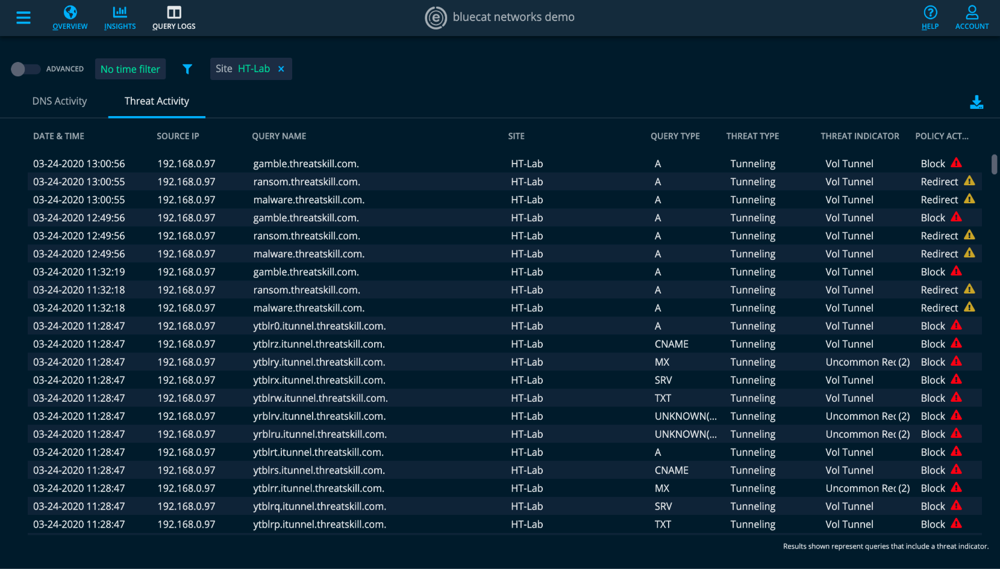Site and Timeframe Filter
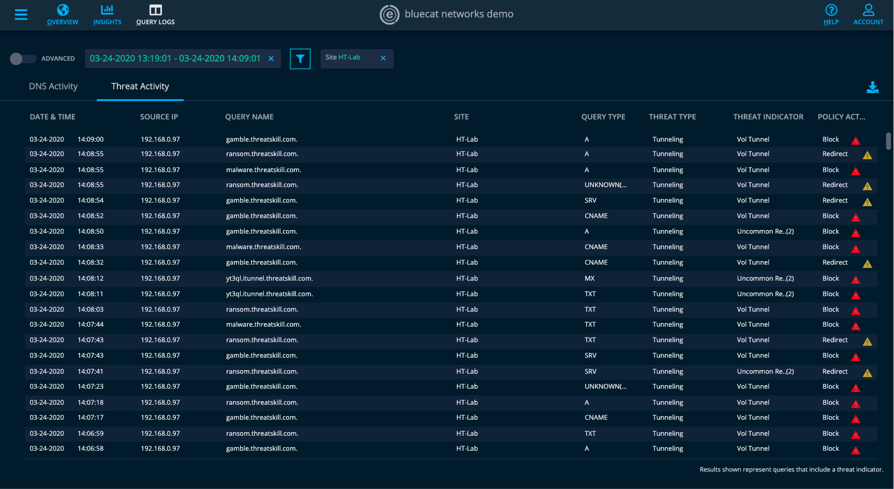Icon Accessibility
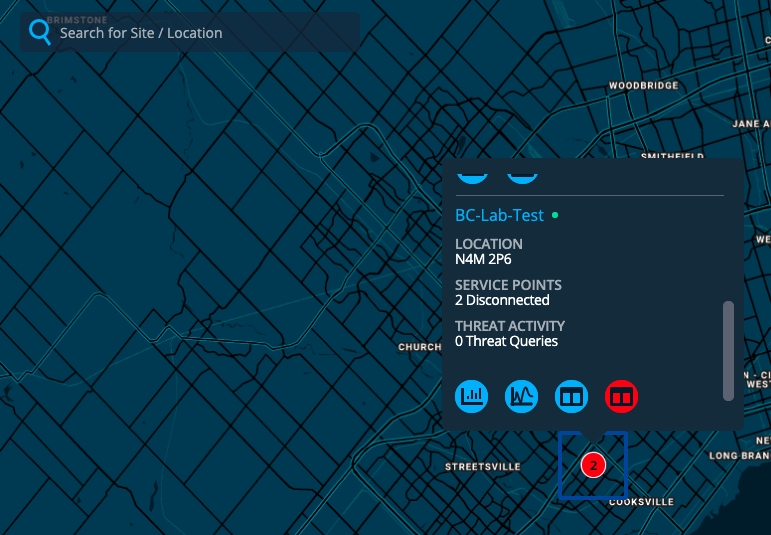Icon Fix

Considerations on the technical side
After presenting to the UI developers my mockup, they acknowledged that the Query Logs icon and the Threat Activity Icon buttons can provide accessibility issues for colourblind users. They would not know the difference between the two buttons, so I went between variations of the error toast icon to showcase that the icon was about threat activity while also making it look up to standards.
The bottom right iteration was the one that satisfied the developers, where it contributes a minimal but immediate presence.
Error Icon Iterations
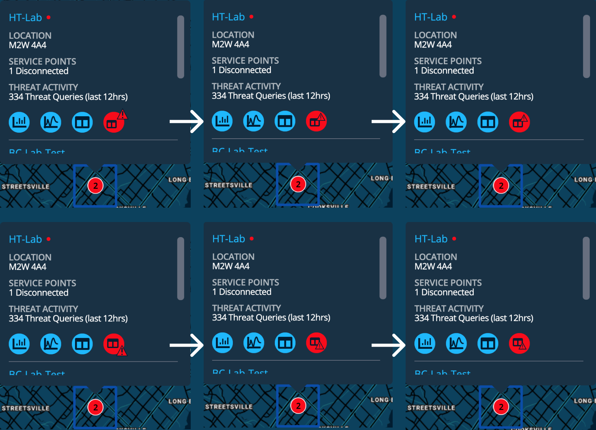Looking back
Some things I learned
Accessibility is a crucial aspect towards a customer-facing product. As it turns out,
designing small-scale features deserves all the attention with their details. Along the
way, I learned how important it is to understand the flexibilty products must go through
to satisfy a wider range of potential customers.
Wanna look at the mockup? You can check it out here .
Part 2
Giving the Edge map search capabilities for locations or site names in the customers network.
Users want an easy to use graphical interface for the search feature, offering more valuable information at a glance and resulting in more details that will be revealed or tasks to be achieved.
Defining the problem
The purpose of this feature
Network admins and security analysts want to investigate sites on their network through a visual method on the Edge map. By having a search function, it will allow for the user to pinpoint targets on the map that they wish to view more efficiently.
Google Maps

Using Google Maps as a starting point, it provided icons for recent searches, normal searches, and location searches.
In my first iteration of the search function, I located the search bar in the top left corner because people read left to right. This gives the left of the page more attention, and using the same train of thought, I placed the icons on the left of the bar as well.
Version 1
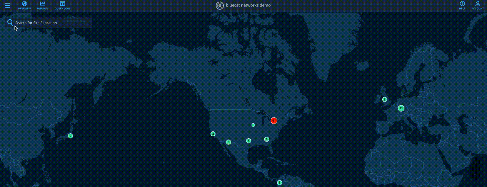RBC Dialog Box Background
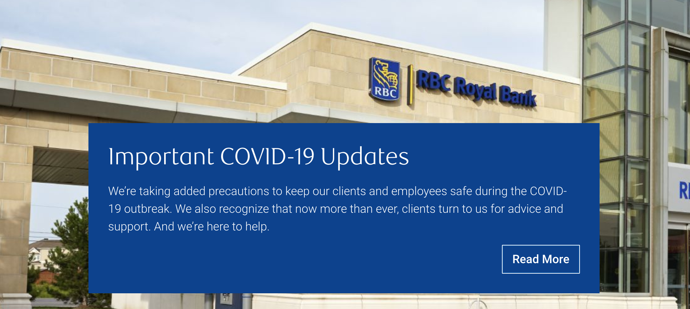I made the mistake of making the search bar a transparency of 70%; whenever text is behind the bar, it will present issues with readability. Using RBC's dialog window as an example, the background holds a solid colour to maintain clarity of the message.
As well, I realized afterwards that adding new icons to the design system can convolute the information.
Learning from that, I removed the additional icons and made the search icon on the right to give a similar reflection to Google Maps. By also implementing a solid colour to the search bar, the visibility of the search will make it easier for the users to use.
Version 2
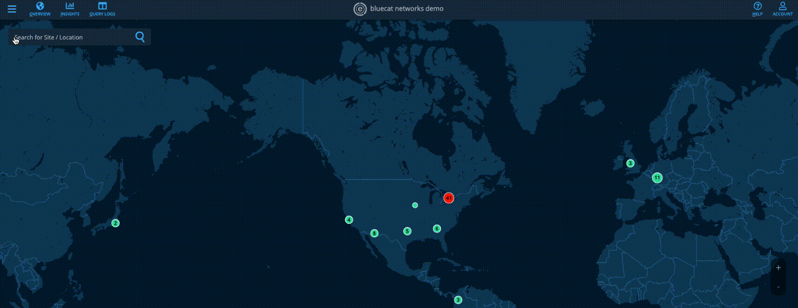For the future
What's next for this?
After giving this to the developers to add to the map, I took away some valuable insight with this idea.
The stylization of small details can accommodate for a a larger or smaller group of people, depending on how certain aspects are achieved. Keeping this in mind, I will proceed to make sure the projects I design in the future will be accessible to a wider range of people.
user experience + interaction design
004. exposing queries per second per service point in Customer Intelligence
overview
On BlueCat Edge, customers want to understand the load on service points deployed to ensure that they have set up an adequate amount to handle existing traffic loads.
customer problem
Currently, there is no way for customer to identify the queries per second per service point. Adding this feature will also help fine tune anycast routing weight distributions.
goal
Expose an average queries per second (e.g. matching the interval time used in the Statistics panel of the Overview page) on a given service point. The ideal scenario is that the data could be exposed both as a number and via graph form (think the Statistics panel graphic representation of traffic).
result
The concept has been approved by the product manager heads of BlueCat Edge, and is in the development phase.
Assessing the situation
What's the problem?
Back in early december, companies such as Mizuho, Porsche, and University of Pittsburgh, requested metrics for QPS per SP. The request was opened for UPitt in order to allow them to confirm Anycast is distributing the load on all SPs in the pool.
My Role
What did I do?
This was my first project at BlueCat, where I learned the principles of networks and put together a feature that required for the average QPS of a service point to be visibly. Understanding the basics of QPS and the term service point, it expanded my knowledge on how security intertwines with networks.
Persona #1: Infrastructure Engineer

Persona #2: Network Engineer

Questions about the feature

Axure

Web